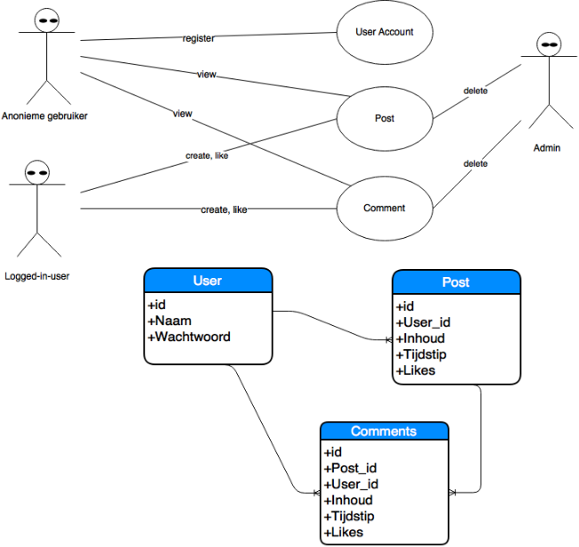

Analyseren, ontwerpen en implementeren van een applicatie met een database
Thu, Oct 15, 2015
SQL-code
CREATE SCHEMA `gip_taak_08_GysenBert` ;
use gip_taak_08_GysenBert;
CREATE TABLE `gip_taak_08_GysenBert`.`Users` (
`Id` int not null auto_increment primary key,
`Naam` VARCHAR(45) NULL,
`Wachtwoord` VARCHAR(45) NULL);
insert into Users(Id, Naam, Wachtwoord)
values
(1, "Bert", "Test123"),
(2, "Jos", "Azerty123");
create table `gip_taak_08_GysenBert`.`Posts` (
Id int not null auto_increment primary key,
User_id int not null,
Inhoud text,
Tijdstip datetime
);
insert into Posts(Id, User_id, Inhoud, Tijdstip)
values
(1, 1, "Hallo allemaal mijn naam is Bert.", "2016-04-18 09:16:55"),
(2, 1, "Ik ben nieuw hier!", "2016-04-18 09:27:24"),
(3, 2, "Ik ben benieuwd wat ik hier allemaal ga kunnen doen.", "2016-04-19 17:28:12");
create table `gip_taak_08_GysenBert`.`Comments` (
Id int not null auto_increment primary key,
Post_id int not null,
User_id int not null,
Inhoud text,
Tijdstip datetime
);
insert into Comments(Id, Post_id, User_id, Inhoud, Tijdstip)
values
(1, 2, 2, "Hey, ik ben ook nieuw hier. Mijn naam is Jos.", "2016-04-18 09:28:21"),
(2, 2, 1, "Aangenaam! Mijn naam is Bert.", "2016-04-18 09:30:37"),
(3, 2, 2, "Ik vind dit al heel leuk tot nu toe!", "2016-04-19 17:31:02"),
(4, 2, 1, "Hahaha, ik ook wel.", "2016-04-19 17:33:44");
/*toont alle user info*/
Select * From Users;
/*toont alle posts info*/
Select Posts.Id, Posts.Inhoud, Posts.Tijdstip, Users.Naam As User From Posts Join Users
ON Posts.User_id = Users.Id;
/*toont alle comments info*/
Select Comments.Id, Comments.Inhoud, Comments.Tijdstip, Posts.Id As Post_Id, Users.Naam As User From Comments
Join Posts ON Comments.Post_id = Posts.Id
Join Users On Comments.User_id = Users.Id;